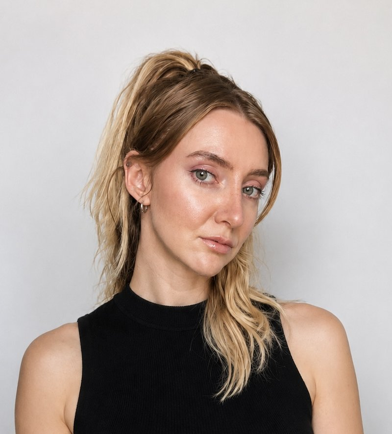
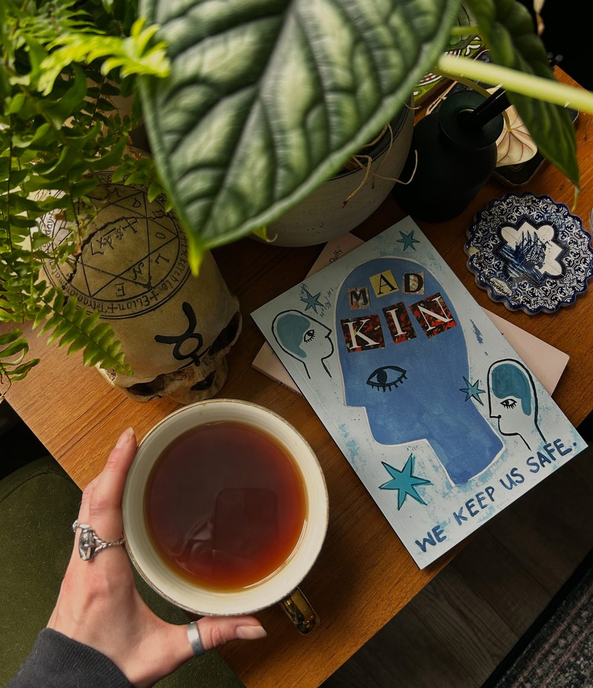

I'm a campaign strategy consultant helping charities and mission-led organisations create bold, anti-oppression communications, grounded in intersectionality and the root of harmful structures. It's the kind of work funders are increasingly asking for, and audiences are crying out to see. But we can't begin that work until we understand what it actually entails.
These aren't just buzzwords. They have very specific meanings and goals, and treating them as interchangeable is exactly where most organisations get stuck. I work with organisations to actually understand them, and how to tailor, embed and practise them meaningfully, not just reach for them in a campaign headline.
How do we get there? It starts with understanding our own power and privilege as individuals, before we can ever hope to build communications that name it honestly in the world.

Julia Tinsley-Kent, MCIPR
Over more than seven years in the charity and non-profit sector, most recently as Head of Policy and Communications at Migrants' Rights Network, I led messaging for a nationwide campaign partnership with Lush across 101 UK stores, grew an organisation's digital reach by over 700%, and advised media and major institutions on framing.
Since going freelance, I've brought that same track record into my own consultancy practice, working with organisations including Kalayaan, NEUROMANCERS and Games Transformed. I'm endlessly curious about how storytelling and narrative shift public understanding, and more specifically, about the gap between an organisation wanting to talk about root causes and actually knowing how. That gap is most of what I get hired to close.
I currently work with organisations on campaign strategy and delivery, communications and messaging, narrative development and framing, and partnerships and collaborations. Always glad to connect with people working on something they actually care about.
MCIPR · Trustee, National Survivor User Network · Co-Director, Parallax Investigations
Over the last few years, funders have placed increasing emphasis on systems change, or "systemic change," or "structural change," depending which funder you ask. But there's very little work being done to help organisations understand what that actually looks like for them, particularly when their history has been focused on reform: making tweaks to systems that are harmful by design.
In practice, this often just means swapping the word "reform" for "systems change" without changing the underlying work. And at a moment when this kind of change is more urgent than ever, the phrase risks becoming exactly the buzzword it was meant to move us past.
I help organisations find consensus around a shared mission and values, and unpack what frameworks like lived experience, intersectionality and anti-oppression actually mean in practice, not just in a mission statement.
Not a values statement. A tested spectrum, built from real organisations' own public language, so a team can see where it stands before a single campaign message gets written.
Grounded in years of direct delivery: co-designing spaces and campaigns built with, not just about, people at the intersection of multiple marginalised identities.
Helping organisations build a genuine public voice on the politics behind their work, including preparing for the reactive moments that voice invites.
Working across Kalayaan, NEUROMANCERS and Games Transformed on campaign strategy, content pillar frameworks and political education.
Led national campaigns and a partnership with Lush across 101 UK stores. Grew digital reach and engagement by over 700%.
Delivered narrative and communications workshops for the Paul Hamlyn Foundation and the Greater London Authority. Commissioned by Ben & Jerry's to advise on messaging and activism strategy.
Led policy and communications on the Ukrainian refugee response, working with senior government stakeholders, and public affairs activity for COP26 engagement.
Delivered national health campaigns, including broadcast partnerships with BBC One and ITV, and managed parliamentary engagement.
A facilitated session using a live strategy tool to help a leadership or comms team agree, in concrete and defensible terms, where they sit on reform, systems change and abolition, so "we do root cause work" is something you can actually stand behind in a funding bid, not just say out loud in a meeting.
This builds on my experience pioneering, designing and delivering acclaimed Words Matter workshops for organisations including Ben & Jerry's, Paul Hamlyn Foundation, Barnardo's and the Greater London Authority. Those sessions were built around the same core logic I use here: personal reflection, shared language, then applied practice. Where Do We Stand? is a new workshop, built specifically for systems change strategy, not a repeat of that earlier work. It's shaped by everything two years in that room taught me about how people actually move from stating a value to living it.
We will delve into where your organisation currently sits, where you want to be and how we get there. That also means drawing on the individual and collective experiences in the room, including power and privilege. That's because change starts from within.
We will unpack social justice frameworks and best practice with the aim of tailoring them to your organisation's voice, audiences and wider mission.
A workshop is the beginning, not a tickbox exercise. Part of my offering is developing tools that can be sustainably and consistently used in communications and campaigns.
My practice is built on the same politics it teaches, so pricing works on a sliding scale rather than one flat rate.
Community groups, unfunded collectives, early-stage CICs
Established organisations with a modest training or strategy budget
Organisations with a properly resourced budget for this kind of work
This approach draws on Arundhati Roy's writing on the voiceless, Gargi Bhattacharyya's work on racial capitalism, the National Survivor User Network's lived-experience writing, Abolitionist Futures, the psychiatric abolition movement, Queers for Palestine, and Healing Justice Ldn, alongside NEON's Power and Privilege guide and Press Officers Handbook. I wrote Migrants' Rights Network's Words Matter compilation explainer myself, and that instinct, translating structural analysis into something a general audience can actually hold, runs through everything I build.
